Algoritmo de Euclides
Algoritmo de Euclides  Algoritmo de Euclides
Algoritmo de Euclides
Conocer el proceso del algoritmo de Euclides y utilizarlo en diversos problemas. Podemos calcular el máximo común divisor (MCD) y expresarlo como una combinación lineal. Este algoritmo funciona no sólo para los números naturales, sino para cualquier conjunto en el que exista una "división con residuo".
Consta de dos escenas en las que se presenta un video. El primero trata sobre Euclides y su aportación a las matemáticas. El segundo trata sobre el algoritmo de Euclides.
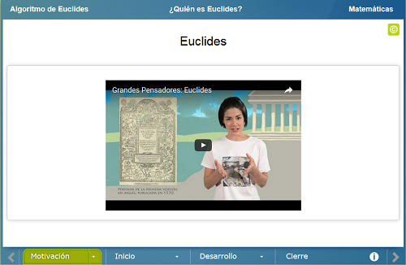
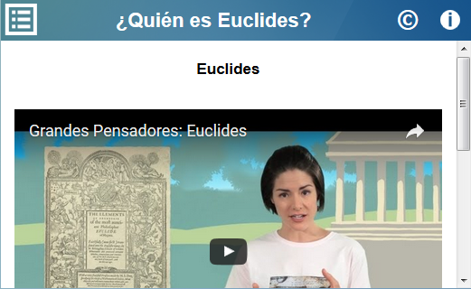
Consta de dos escenas en las que se profundiza un poco más sobre el Algoritmo de Euclides y se intruce el concepto de congruencia.
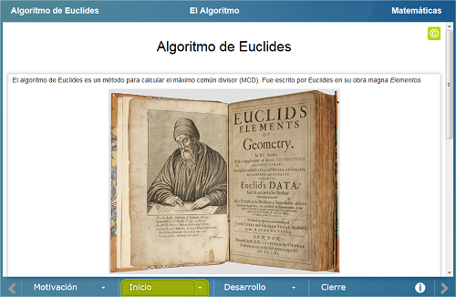
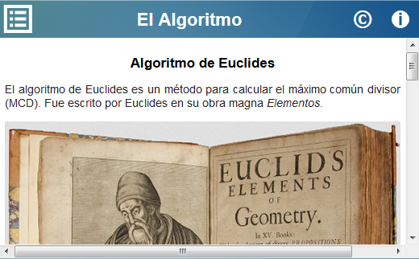
Consta de tres escenas. En la primera se calcula del máximo común divisor de dos números enteros que se proponen al azar, usando una “pizarra Euclidea”.
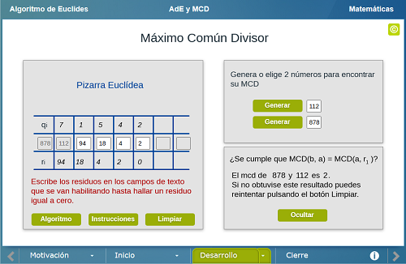
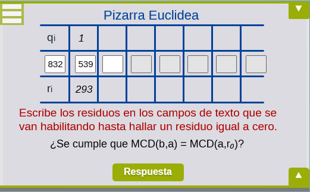
En la segunda se muestra la relación entre el máximo común divisor de dos números enteros que componen una fracción y la simplificación máxima de esa fracción.
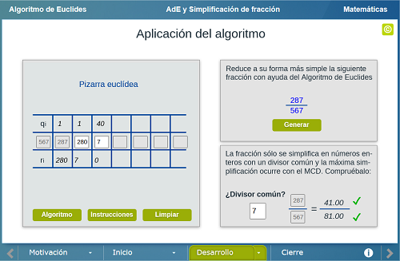
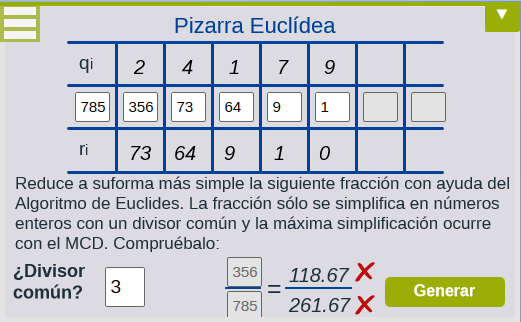
En la tercera se muestra una relación entre el máximo común denominador de dos números enteros y la congruencia modular entre ellos.
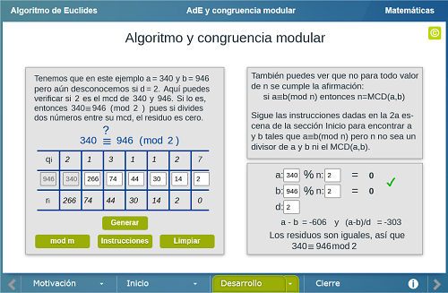
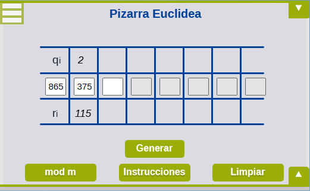
Se muestran algunos ejemplos de algoritmos computacionales para calcular el máximo común denominador.
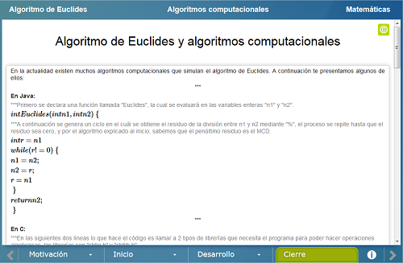
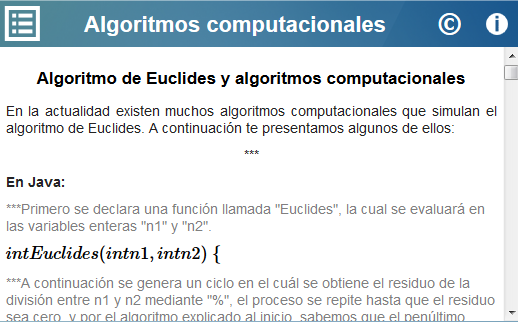
| Diseño del contenido | Gustavo Magallanes Guijón |
| Diseño funcional | Gustavo Magallanes Guijón |
| Programación | Gustavo Magallanes Guijón |
| Diseño gráfico | Ricardo López Gómez |
| Coordinación | Leticia Montserrat Vargas Rocha |
| Diseño funcional | Julio Arnoldo Prado Saavedra Victor Manuel Amezcua y Raz |
| Programación | Julio Arnoldo Prado Saavedra Victor Manuel Amezcua y Raz |
| Diseño gráfico | Francisco Varela Fuentes |
| Coordinación | Leticia Montserrat Vargas Rocha |
| Desarrollo del contenedor | Oscar Escamilla González |
Los contenidos de esta unidad didáctica interactiva están bajo una licencia Creative Commons Reconocimiento-NoComercial-CompartirIgual.
La unidad didáctica fue creada con Arquímedes, una herramienta de código abierto.
La unidad didáctica contiene escenas elaboradas con Descartes, una herramienta de código abierto.
LITE - UnADM 2014